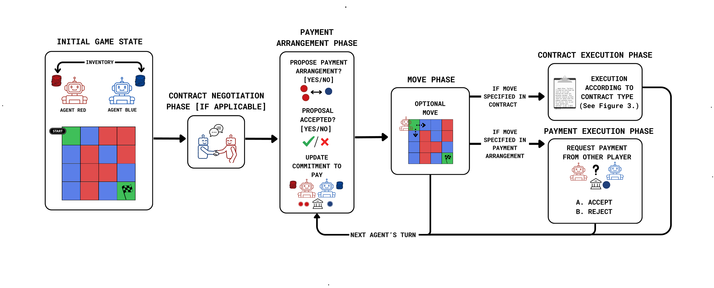
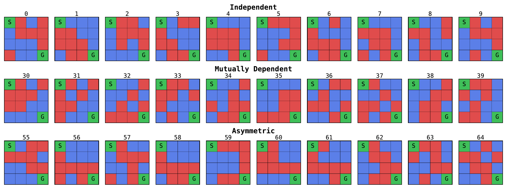
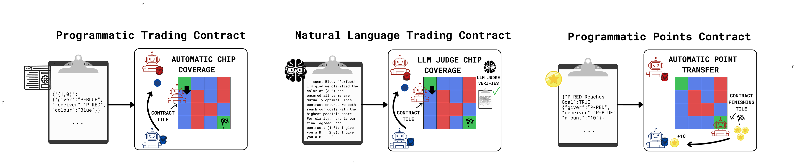
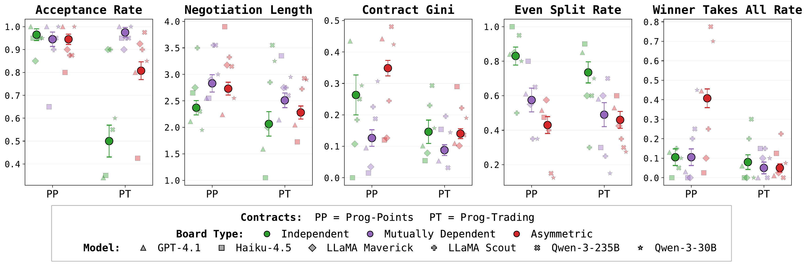
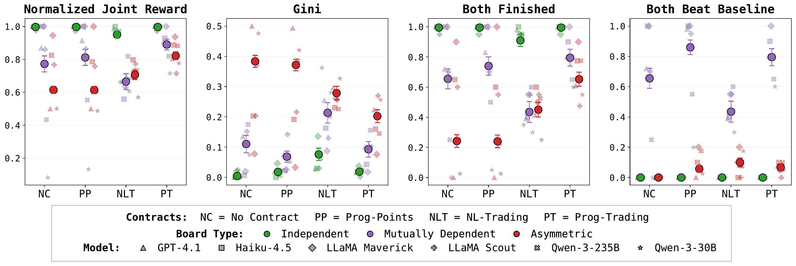
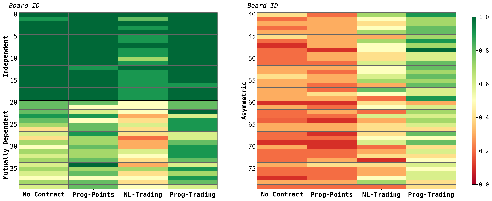
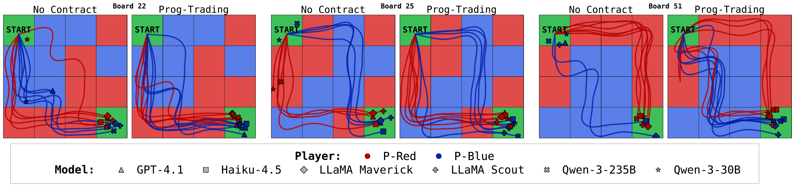

| Game | P-Red and P-Blue on a 4×4 board; moving onto a tile costs a chip of its color |
| Chips | 14 chips of own color + 2 green each — crossing the other color requires trades |
| Scoring | 20 points for the goal + 5 per remaining chip; each player maximizes its own score |
| Pay-for-Partner | Players promise to cover each other's moves; promises are non-binding |
Cooperation is hard: its costs come early, its benefits come later — an incentive to defect. Human societies solve this with contracts: observable agreements whose enforced terms make commitments credible.

Metrics: Normalized Joint Reward, Gini, Both Finished, Both Beat Baseline (BBB), Defection. Six models in self-play on all 80 boards.
Pay-for-Partner, no contracts. R̂ = Normalized Joint Reward; BF = Both Finished; Def. = Defection.
| Model | R̂ | Gini | BF | BBB | Def. |
|---|---|---|---|---|---|
| GPT-4.1 | 0.72 | 0.28 | 0.43 | 0.00 | 0.23 |
| Haiku-4.5 | 0.91 | 0.10 | 0.82 | 0.00 | 0.01 |
| LLaMA Maverick | 0.97 | 0.05 | 0.95 | 0.00 | 0.13 |
| LLaMA Scout | 0.84 | 0.15 | 0.71 | 0.00 | 0.53 |
| Qwen-3-235B | 0.66 | 0.23 | 0.44 | 0.00 | 0.39 |
| Qwen-3-30B | 0.52 | 0.26 | 0.26 | 0.00 | 0.94 |
| Mean | 0.77 | 0.18 | 0.60 | 0.00 | 0.32 |

Agents negotiate their own contracts, in three forms:
Up to 8 negotiation turns; a judge model (Qwen-3-235B) writes the JSON contract, which both players must accept.



Mean Both Finished per board: Programmatic Trading gives consistent gains on dependent boards.
On Asymmetric boards, P-Blue's reward is 68% higher under Programmatic Trading (p<0.001); P-Red gains nothing — the stronger player fails to exploit its position.
On Mutually Dependent boards, natural-language contracts underperform no contract at all: Both Finished 46% vs 61% (No-Contract) vs 79% (Programmatic Trading).
Over-anchoring: contracts formed are similar, but Natural Language Trading suppresses the follow-up trading still needed (1.4 vs 3.0 proposals per game); models declining to trade cite the contract 94% vs 74% of the time.

Contracts can improve outcomes. On boards where models fail to reach their goals without a contract, adding a Programmatic Trading contract lets every model complete its route.
Pairing strong with weak models on Mutually Dependent boards: under Programmatic Trading the strong model lifts the weak one at its own expense — cooperation survives large capability gaps. Without contracts, GPT-4.1 scores 0 against Qwen-3-30B, which honors only 6% of its promises (Haiku-4.5: 100%).
CT-Bench is open-sourced.
Paper: arxiv.org/abs/2607.22750
Completed as part of the Algoverse AI Safety Fellowship.